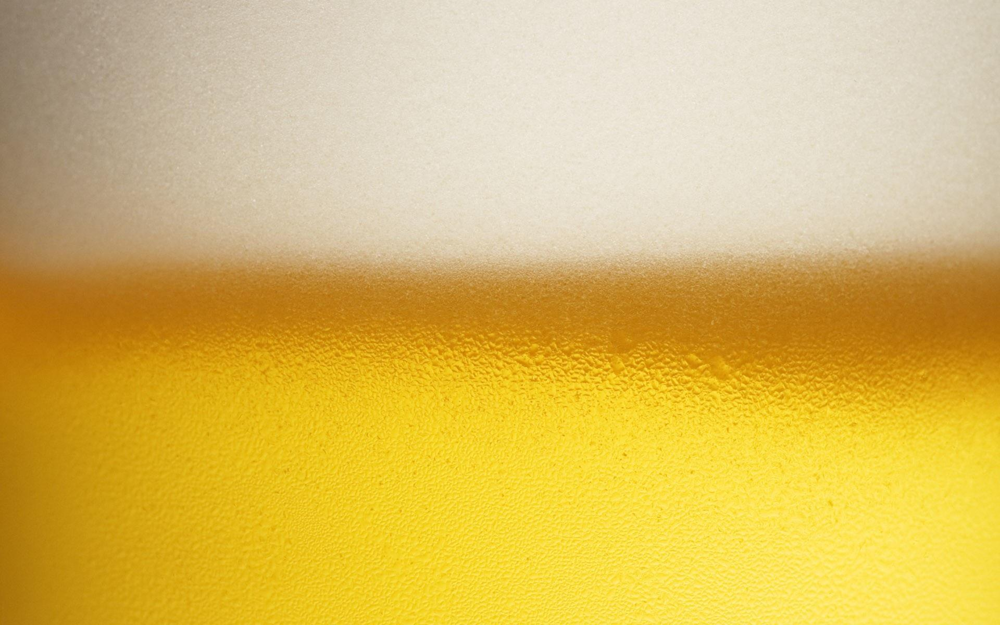

<mat-toolbar>
  
  <span>Beer picker</span>
  <span class="spacer"></span>
  <nav mat-tab-nav-bar mat-stretch-tabs>
    <a mat-tab-link *ngFor="let link of links" [routerLink]="link.link" routerLinkActive #rla="routerLinkActive"
      [active]="rla.isActive"> {{link.label}} </a>
  </nav>
  <span class="spacer"></span>
  <button mat-button mat-mat-flat-button matTooltip="Log in" *ngIf="this.user === false" (click)="login()" background-color="primary" color="primary">SIGN IN</button>
  <button mat-button mat-mat-flat-button matTooltip="Register" *ngIf="this.user === false" (click)="register()" background-color="link">SIGN UP</button>
  <button mat-button mat-mat-flat-button matTooltip="Add a new rule" *ngIf="this.user === true" (click)="addRule()" background-color="accent">ADD RULE</button>
  <button mat-button mat-mat-flat-button matTooltip="Log out" *ngIf="this.user === true" (click)="logout()" background-color="primary">SIGN OUT</button>
</mat-toolbar>

<router-outlet></router-outlet>
<!-- Icons made by <a href="https://www.flaticon.com/authors/smalllikeart" title="smalllikeart">smalllikeart</a> from <a href="https://www.flaticon.com/" title="Flaticon"> www.flaticon.com</a> -->
